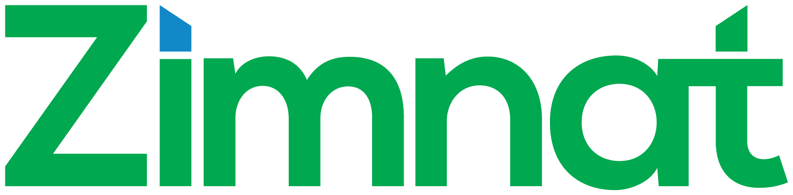

Reconciled against "Z Group — Project Portfolio Management Tool: Requirements Specification" · Generated 2026-06-22
| Role | Password | Why this account | |
|---|---|---|---|
| Admin | admin@zimnat.co.zw | password | Full visibility — every assignee's allocation performance, can override any allocation |
| Editor | mc@zimnat.co.zw (Miriam Charehwa) | password | A real assignee/allocator in the seed data — see "my allocated projects" and rejection notifications |
| Viewer | blessingmaisiri29@gmail.com (Blessing Maisiri) | password | A real owner in the seed data, viewer role — shows owners can hold any role |